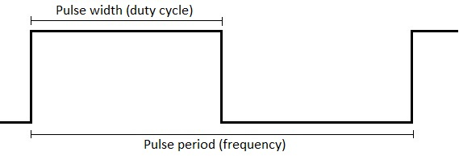

LabBoard
Control LabBoard from TotemDuino over Totem Library.
To setup serial communication - read Serial setup section.
Make sure Serial.begin(57600) speed matches with the one selected in LabBoard.
Example code executed on TotemDuino:
#include <TotemLabBoard.h>
TotemLabBoard LB;
void setup() {
Serial.begin(57600); // Set baudrate to 57600
}
void loop() {
LB.led.on(); // Turn all LabBoard LED on
delay(1000); // Wait 1s
LB.led.off(); // Turn all LabBoard LED off
delay(1000); // Wait 1s
}
Voltage read (ADC)
Read voltage of LabBoard analog inputs.
LB.volt.getVIN()¶
-
Read VIN pin voltage.
Returns: (float)6.0-30.0V |-100.0- invalid. LB.volt.get50V()¶
-
Read ±50V pin voltage.
Returns: (float)-50.0-50.0V |-100.0- invalid. LB.volt.get5V()¶
-
Read ±5V pin voltage.
Returns: (float)-6.15-6.15V |-100.0- invalid. LB.volt.get05V()¶
-
Read ±0.5V pin voltage.
Returns: (float)-0.7-0.7V |-100.0- invalid. LB.volt.getAmp()¶
-
Read SHUNT pin current.
Returns: (float)0.0-0.8A |-100.0- invalid.
#include <TotemLabBoard.h>
TotemLabBoard LB;
void setup() {
Serial.begin(57600); // Set baudrate to 57600
LB.display.setMonitor(0); // Don't print "Serial.print" to LabBoard display.
LB.display.clear(); // Clear LabBoard display.
}
void loop() {
// Read LabBoard voltages
float v05 = LB.volt.get05V();
float v5 = LB.volt.get5V();
float v50 = LB.volt.get50V();
float vin = LB.volt.getVIN();
// Print voltages to Arduino IDE Serial Monitor
Serial.print("Pin 0.5V : ");
Serial.println(v05);
Serial.print("Pin 5V : ");
Serial.println(v5);
Serial.print("Pin 50V : ");
Serial.println(v50);
Serial.print("Pin VIN : ");
Serial.println(vin);
delay(300);
}
Voltage write (DAC)
Write voltage to LabBoard analog outputs.
LB.volt.setVREG(
voltage)¶-
Write VREG pin voltage.
Maximum output voltage depends on VIN voltage.
voltage: (float)3.0-VIN - 1.0V. LB.volt.setDAC1(
voltage)¶-
Write DAC1 pin voltage.
voltage: (float)0.0-3.25V. LB.volt.setDAC2(
voltage)¶-
Write DAC2 pin voltage.
voltage: (float)0.0-3.25V. LB.volt.setDAC3(
voltage)¶-
Write DAC3 pin voltage.
voltage: (float)0.0-3.25V.
LB.volt.getVREG()¶
-
Read VREG pin voltage.
Returns: (float)3.0-VIN - 1.0V. LB.volt.getDAC1()¶
-
Read DAC1 pin voltage.
Returns: (float)0.0-3.25V. LB.volt.getDAC2()¶
-
Read DAC2 pin voltage.
Returns: (float)0.0-3.25V. LB.volt.getDAC3()¶
-
Read DAC3 pin voltage.
Returns: (float)0.0-3.25V.
#include <TotemLabBoard.h>
TotemLabBoard LB;
void setup() {
Serial.begin(57600); // Set baudrate to 57600
}
void loop() {
LB.volt.setDAC1(0.5); // Set DAC1 to 0.5V
LB.volt.setDAC2(1.0); // Set DAC2 to 1.0V
LB.volt.setDAC3(1.5); // Set DAC3 to 1.5V
delay(2000); // Wait 2s
LB.volt.setDAC1(1.5); // Set DAC1 to 1.5V
LB.volt.setDAC2(2.0); // Set DAC2 to 2.0V
LB.volt.setDAC3(2.5); // Set DAC3 to 2.5V
delay(2000); // Wait 2s
}
Frequency generator
Control LabBoard frequency generator on TXD pin.

LB.txd.stop()¶
-
Stop signal generator on TXD pin.
LB.txd.start()¶
-
Start signal generator on TXD pin.
LB.txd.startBurst()¶
-
Start signal generator on TXD pin and stop after number of pulses elapsed.
Configured with withsetBurstCount(count). LB.txd.setBurstCount(
count)¶-
Write amount of pulses to output during burst mode.
Generator will stop when configured number is reached.
count:0-65535. LB.txd.setFrequency(
frequency)¶-
Write output signal frequency in hertz.
frequency:1-1000000Hz LB.txd.setDutyCycle(
percentage)¶-
Write output signal duty cycle in percentage.
0.1precision.
percentage: (float)0.0-100.0% LB.txd.setPeriod(
period)¶-
Write output signal frequency (period) in microseconds.
period:1-1000000μs LB.txd.setPulseWidth(
pulse)¶-
Write output signal duty cycle (pulse width) in microseconds.
Value can't be larger than period!
pulse:0-1000000μs
LB.txd.isBurst()¶
-
Read if generator is running in burst mode.
LB.txd.isRunning()¶
-
Read if generator is running.
LB.txd.getFrequency()¶
-
Read output signal frequency in hertz.
Returns:1-1000000Hz LB.txd.getDutyCycle()¶
-
Read output signal duty cycle in percentage.
Returns: (float)0.0-100.0% LB.txd.getPeriod()¶
-
Read output signal frequency (period) in microseconds.
Returns:1-1000000μs LB.txd.getPulseWidth()¶
-
Read output signal duty cycle (pulse width) in microseconds.
Returns:0-1000000μs
#include <TotemLabBoard.h>
TotemLabBoard LB;
void setup() {
Serial.begin(57600); // Set baudrate to 57600
LB.txd.setFrequency(2000); // Set frequency to 2kHz
LB.txd.setDutyCycle(20); // Set duty cycle to 20%
LB.txd.start(); // Enable signal generator on TXD pin
}
void loop() {
LB.txd.setDutyCycle(20); // Set duty cycle to 20%
delay(2000); // Wait 2s
LB.txd.setDutyCycle(80); // Set duty cycle to 80%
delay(2000); // Wait 2s
}
Frequency monitor
Control LabBoard frequency monitor and counter on DIG1 pin.
LB.rxd.stop()¶
-
Stop signal monitor on DIG1 pin.
LB.rxd.start()¶
-
Start signal monitor on DIG1 pin.
LB.rxd.getFrequency()¶
-
Read input signal frequency in hertz.
Returns:0-23000000Hz LB.rxd.getPeriod()¶
-
Read input signal frequency (period) in microseconds.
Returns:0.04-1000000.0μs LB.rxd.getCount()¶
-
Read number of signal pulses elapsed.
Returns: number LB.rxd.resetCount()¶
-
Reset pulse counter to 0 (value returned by
getCount()). LB.rxd.setSampleEdge(
edge)¶-
Write sample (detect) edge. Default: HIGH
edge:0- LOW edge (falling)
1- HIGH edge (rising) LB.rxd.getSampleEdge()¶
-
Read sample (detect) edge.
Returns:0- LOW edge (falling)
1- HIGH edge (rising)
#include <TotemLabBoard.h>
TotemLabBoard LB;
void setup() {
Serial.begin(57600); // Set baudrate to 57600
LB.txd.start(); // Enable signal monitor on DIG1 pin
}
void loop() {
// Read measured frequency on DIG1 pin
int frequency = LB.rxd.getFrequency();
// Print measured frequency on LabBoard display
Serial.println(frequency);
delay(500); // Wait 0.5s
}
Digital read
Read digital state of LabBoard pins DIG1 and DIG2.
LB.getDIG1()¶
-
Read LabBoard pin DIG1 digital state.
Returns:0- LOW |1- HIGH LB.getDIG2()¶
-
Read LabBoard pin DIG2 digital state.
Returns:0- LOW |1- HIGH
#include <TotemLabBoard.h>
TotemLabBoard LB;
void setup() {
Serial.begin(57600); // Set baudrate to 57600
}
void loop() {
// Read DIG pins state
int dig1 = LB.getDIG1();
int dig2 = LB.getDIG2();
// Print pins state to LabBoard display
Serial.print("1");
Serial.println(dig1 ? "HI" : "LO");
Serial.print(" 2");
Serial.println(dig2 ? "HI" : "LO");
}
Display control
Control LabBoard 7-segment display.
Serial.println(
value)¶-
Write value to display. Aligned to right.
value: any value or string. LB.display.print(
value)¶-
Write value to display. Aligned to left.
value: any value or string. LB.display.print(
offset,value)¶-
Write value to display. Aligned to left. Allows to set writing start point.
offset: number of segments to push from left.
value: any value or string. LB.display.clear()¶
-
Clear display (set to empty).
LB.display.setBlink(
rate)¶-
Write whole display blinking rate in milliseconds.
rate:0-1000ms |0- stop blink. LB.display.setBlink(
segment,rate)¶-
Write specific segment blinking rate in milliseconds.
segment:1-9number from left.
rate:0-1000ms |0- stop blink. LB.display.setBlinkBinary(
map,rate)¶-
Write binary map of segments group to set blinking rate in milliseconds.
map:B000000000-B111111111|0x0-0x1FF.
rate:0-1000ms |0- stop blink. LB.display.setBrightness(
brightness)¶-
Write display brightness.
brightness:0-15 LB.display.setMonitor(
state)¶-
Write serial monitor feature state (on / off).
Will print all data fromSerial.println()to display. Default: on.
state:0- off |1- on
#include <TotemLabBoard.h>
TotemLabBoard LB;
void setup() {
Serial.begin(57600); // Set baudrate to 57600
}
int counter = 0;
void loop() {
// Clean display before printing
LB.display.clear();
counter++; // Increment counter value
LB.display.print(0, counter); // Print to first segment
counter++;
LB.display.print(3, counter); // Print to fourth segment
counter++;
LB.display.print(6, counter); // Print to seventh segment
delay(1000);
}
LED control
Control 11 available LabBoard LED. Each one can be individually turned on / off.
LED names
| Number | Name on board | Name in code | Binary map |
|---|---|---|---|
| 0 | All | LabBoard::LED_ALL | B00000000000 |
| 1 | DIG1 | LabBoard::LED_DIG1 | B00000000001 |
| 2 | DIG2 | LabBoard::LED_DIG2 | B00000000010 |
| 3 | ±50V | LabBoard::LED_50V | B00000000100 |
| 4 | ±5V | LabBoard::LED_5V | B00000001000 |
| 5 | ±0.5V | LabBoard::LED_05V | B00000010000 |
| 6 | DAC1 | LabBoard::LED_DAC1 | B00000100000 |
| 7 | DAC2 | LabBoard::LED_DAC2 | B00001000000 |
| 8 | DAC3 | LabBoard::LED_DAC3 | B00010000000 |
| 9 | VIN | LabBoard::LED_VIN | B00100000000 |
| 10 | VREG | LabBoard::LED_VREG | B01000000000 |
| 11 | mAmp | LabBoard::LED_mAmp | B10000000000 |
LB.led.on()¶
-
Write all LED to turn on.
LB.led.off()¶
-
Write all LED to turn off.
LB.led.on(
number)¶-
Write specific LED to turn on.
number:1-11|0- all LED. LB.led.off(
number)¶-
Write specific LED to turn off.
number:1-11|0- all LED. LB.led.set(
number,state)¶-
Write specific LED state (on / off).
number:1-11|0- all LED.
state:0- off |1- on. LB.led.get(
number)¶-
Read specific LED state.
number:1-11|0- all LED.
Returns:0- off |1- on. LB.led.setBinary(
map)¶-
Write binary map of turned on LED.
map:B00000000000-B11111111111|0x0-0x7FF LB.led.getBinary()¶
-
Read binary map of turned on LED.
Returns:B00000000000-B11111111111|0x0-0x7FF
#include <TotemLabBoard.h>
TotemLabBoard LB;
void setup() {
Serial.begin(57600); // Set baudrate to 57600
}
void loop() {
LB.led.on(); // Turn all LED on
delay(1000); // Wait 1s
LB.led.off(LabBoard::LED_DAC2); // Turn DAC2 LED off
delay(1000); // Wait 1s
LB.led.off(LabBoard::LED_5V); // Turn 5V LED off
delay(1000); // Wait 1s
LB.led.off(); // Turn all LED off
delay(1000); // Wait 1s
}
Key read
LB.key.get(
number)¶-
Read specific key state.
Returns:0- not pressed
1- is pressed LB.key.getBinary()¶
-
Read binary map of pressed keys.
Returns:B00000-B11111|0x0-0x1F
#include <TotemLabBoard.h>
TotemLabBoard LB;
void setup() {
Serial.begin(57600); // Set baudrate to 57600
}
void loop() {
// Get keys state
int kLeft = LB.key.get(LabBoard::KEY_LEFT);
int kMid = LB.key.get(LabBoard::KEY_MIDDLE);
int kRight = LB.key.get(LabBoard::KEY_RIGHT);
// Display "---" if key is pressed
LB.display.clear();
LB.display.print(0, kLeft ? "---" : " ");
LB.display.print(3, kMid ? "---" : " ");
LB.display.print(6, kRight ? "---" : " ");
delay(50);
}
Configuration
Control LabBoard stored settings.
Settings list
| Name | Description |
|---|---|
| REV | Revision number (readonly) |
| VERS | Firmware version (readonly) |
| SBAUD | Default serial baud rate |
| SMODE | Default serial mode |
| SON | Background serial mode |
| DISP | Display brightness |
| VREG | Calibration offset |
| DAC1 | Calibration offset |
| DAC2 | Calibration offset |
| DAC3 | Calibration offset |
| VIN | Calibration offset |
| 50V | Calibration offset |
| 5V | Calibration offset |
| 05V | Calibration offset |
| RST | Write 1 to factory reset |
For more information read Serial protocol - Configuration.
LB.config.set(
name,value)¶-
Write configuration (setting) value.
name: setting name ("DISP")
value: setting value LB.config.get(
name)¶-
Read configuration (setting) value.
name: setting name ("DISP")
Returns: setting value
#include <TotemLabBoard.h>
TotemLabBoard LB;
void setup() {
Serial.begin(57600); // Set baudrate to 57600
}
void loop() {
// Get revision and version
int rev = LB.config.get("REV");
int vers = LB.config.get("VERS");
// Print to display
Serial.print(rev);
Serial.print(" ");
Serial.println(vers);
delay(1000); // Wait 1s
}
Power
Control LabBoard power state.